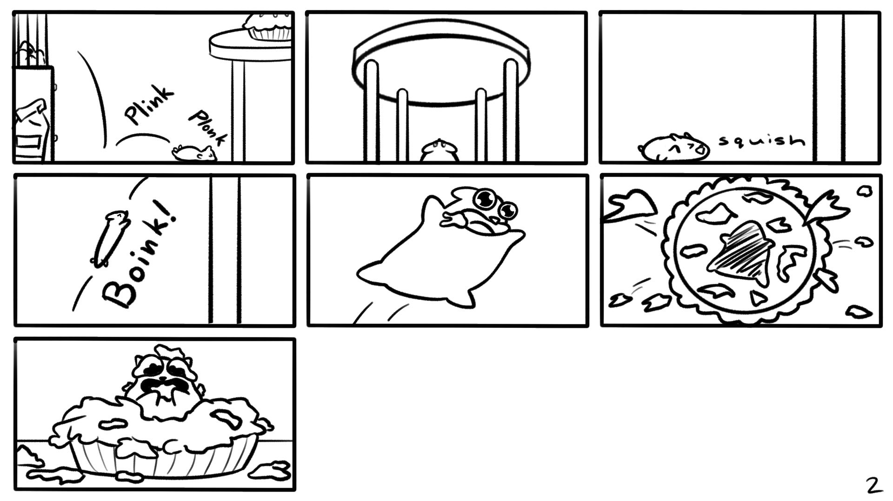

My Artworks
Here's all my artworks! I mainly specialize in realism, digital art and watercolour. These all of the artworks I finished over the years so the styles will likely vary.



My IMD Portfolio
Here's my IMD Portfolio that I submitted to get into this program. This took a lot of time to compile when making it for application season but we got there in the end. I used Canva to make the entire thing so enjoy!